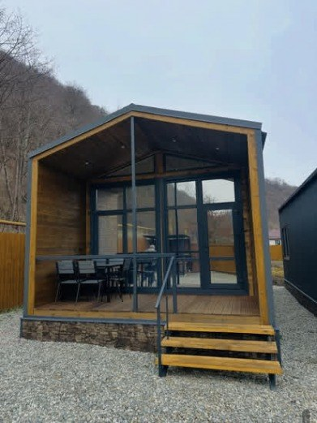
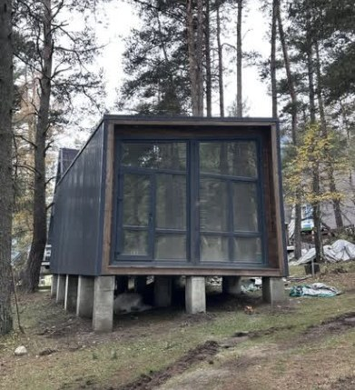
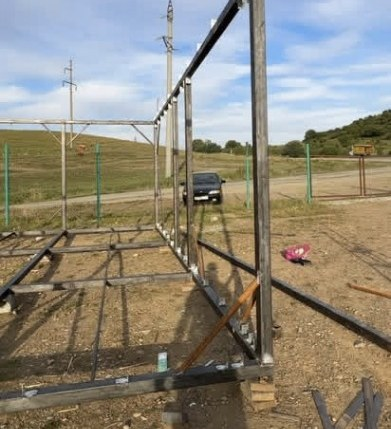
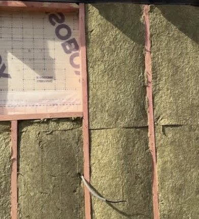
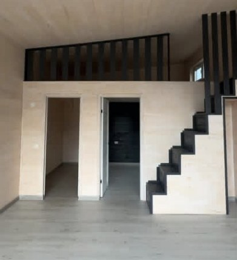
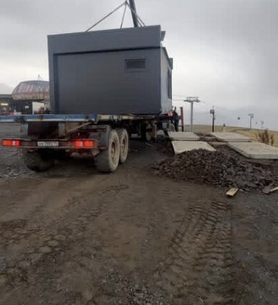

Главное в пяти пунктах
Доставка по КЧР и установка за 1 день. Это ваш главный довод. Все пять компаний, которых я посмотрела, везут дома из Ставропольского края или Нальчика. Вы работаете прямо в КЧР, из Зеленчукской.
В ленте видно весь путь дома: каркас, утепление, трал и кран на участке. 3 283 подписчика видят, что вы реально ставите дома. Но размеров, цен и названий моделей в профиле нет.
Поэтому каждый разговор начинается с нуля: «сколько стоит дом 6 на 8, что входит, сколько ехать к нам». А у соседей цена «от» стоит у модели: «Глэмп 30» от 1 285 000 ₽, домик «Мона» 17 м² за 350 000 ₽.
Когда я искала «модульные дома Черкесск», в выдаче были сайты из Ставрополя и Нальчика. Вашего сайта там нет, и человек уходит к тем, кого нашёл.
Сайт делается за 7–10 дней. Рилс и ссылка в шапке будут вести в одно место, где человек сам выбирает дом и район, а вам приходит заявка с адресом участка.
Что у вас уже сильное
- Установка за 1 день. Это написано в шапке, и ваши видео это показывают: модуль приезжает на трале, кран ставит его на место. Человеку не нужно жить на стройке месяцами.
- Доставка по всей КЧР. Черкесск, горы, турбазы. Вы рядом, и это короче, чем везти дом из Ставрополя.
- Наличный и безналичный расчёт. Для турбаз и тех, кто ставит модули под аренду, безнал часто решает, к кому идти.
- Разные дома, а не одна модель. Модули с панорамными окнами и фасадом под дерево, дом с террасой и двускатной крышей, двухэтажный дом в ельнике, модуль на сваях в лесу, мини-модули. Это готовый каталог.
- Объекты в горах. На ваших видео модули стоят у канатной дороги на фоне снежных вершин. Тому, кто строит гостевые домики, лучшего примера не нужно.
- Честно показываете, что внутри стен. Металлокаркас, утеплитель, отделка деревом, лестница на антресоль. Человек видит, за что платит.









Фото и кадры из ваших видео в Instagram
Что сейчас мешает
- В шапке профиля нет ни одной цены и ни одного размера. Чтобы узнать хотя бы порядок суммы, человеку из Черкесска приходится писать и ждать ответа.
- Каждый расчёт собирается по кусочкам: какой размер, для жизни или под гостей, куда везти, пройдёт ли трал, нужны ли сваи. Вы отвечаете между монтажами, и часть людей не дожидается.
- Дома в ленте без подписей: не видно, какой это размер и сколько он стоит. Модуль с панорамой лежит рядом с закатами и видами на горы, и нужный дом приходится искать.
- Беседки есть в шапке, но в той части ленты, что я посмотрела, их нет. Кто хочет беседку, не видит, как она выглядит.
- Кто ищет «модульный дом Черкесск» в поиске, находит сайты из Ставрополя и Нальчика. Профиль в Instagram в такой выдаче почти не виден.
Что спрашивают перед покупкой
Две группы вопросов, и на обе сайт отвечает до того, как человек напишет вам.
Дом
Доставка и участок
Кто ещё работает в нише
В самой КЧР я не нашла сайтов с модульными домами, поэтому смотрела ближайших соседей, которые возят дома в регион.
«Пока нет Дома»
pokanetdoma.ru/stavropolМодульные дома, барнхаусы, глэмпинг-домики и бани. Модель «Глэмп 30» в комплектации «Стандарт» от 1 285 000 ₽. Пишут, что работают с 2022 года и сделали больше 500 проектов. Каталог с комплектациями присылают по заявке, в Telegram-канале рассказывают про рассрочку.
Woodnext
woodnext.ru/stavropolМодульные дома и бани под ключ примерно за 70 дней. Дом собирают на производстве и привозят на участок манипулятором. Гарантия 1 год, больше 400 типовых планировок, PDF-каталог с ценами присылают по заявке.
Юг-Бытовка24
stavropol.bitovka24.ruМодульные дома из блок-контейнеров. Цены на карточках примерно от 260 до 480 тысяч ₽, часть позиций под заказ. Доставка краном-манипулятором со стрелой от 8 до 24 м.
Машукстрой
mashukstroy07.ruКаркасные, SIP-панельные и модульные дома. Есть небольшие проекты с ценой, например домик «Мона» 17 м² за 350 000 ₽.
Modiflex
modiflex.ru/nalchikМодульные дома для круглогодичного проживания, пишут про собственное производство. В каталоге есть мини-дом 3×6 для временного жилья или кабинета. У сайта есть отдельная страница для Черкесска.
Описания собраны по открытым данным и поисковой выдаче на 19 ноября 2026. Цены и условия у компаний могли измениться.
Что стало нормой
- Цена «от» у каждой модели
- Каталог моделей с размерами и планировками
- Доставка манипулятором
- Гарантия 1 год
- Каталог или рассрочка в обмен на телефон
Чего я не встретила в их описаниях
- Производства и монтажа в самой КЧР
- Установки за 1 день как главного обещания
- Подбора дома сразу с районом доставки и готовностью участка
- Беседок рядом с домами
Что должен делать ваш сайт
Подбирать дом
Тип, площадь и для чего. Заявка приходит вам в WhatsApp вместе с районом и готовностью участка.
Показывать модели с ценой «от»
Размер, площадь, что входит, фото и видео из вашей ленты. Кнопка «Хочу такой» у каждой.
Отвечать «сколько ехать»
Районы КЧР, сроки доставки и что подготовить на участке: подъезд для трала, сваи.
Объяснять, что внутри стен
Металлокаркас, утепление, окна, отделка. Что в цене, а что за доплату.
Показывать беседки
Отдельным разделом, с размерами и ценой, чтобы их не искали среди домов.
Находиться в поиске
По запросам «модульные дома Черкесск», «модульный дом КЧР», «беседка под ключ Черкесск», плюс ссылка в шапке Instagram.
Было и стало
Так обычно выглядит путь от первого вопроса до расчёта, и так он выглядит с сайтом.
Пять сообщений, а вы в это время на монтаже с краном.
Одно сообщение. Остаётся ответить ценой с доставкой.
Что можно предложить вашим клиентам
Это варианты на обсуждение, берите то, что подходит.
Дата установки на весну
Кто выбирает дом зимой, сразу бронирует день установки. Плашка на первом экране до марта, и весенний график заполняется заранее.
Модули для турбаз под ключ
Несколько гостевых модулей одним заказом, безналичный расчёт, установка до сезона. Ваши объекты у канатной дороги покажут, как это выглядит.
Дом и беседка одной доставкой
Один трал и один день установки. Беседку не нужно заказывать отдельно и ждать второй машины.
Памятка «Что подготовить на участке»
Подъезд для трала, сваи, свет. Человек оставляет телефон, чтобы её получить, а вы заранее знаете, готов ли участок.
Что нужно уточнить
- Какие модели вы делаете чаще всего? Нужны размер, площадь и цена «от» хотя бы для 3–5 домов.
- Что входит в «под ключ»: утепление, окна, отделка, электрика, сантехника? Что за доплату?
- Доставка входит в цену или считается отдельно? Зависит ли от района: Черкесск, Карачаевск, Архыз, Домбай?
- Сваи или фундамент делаете вы? Какой нужен подъезд для трала и крана?
- Сколько дней от заявки до установки, пока дом делается?
- Беседки: какие размеры и материалы? Есть фото готовых?
- Модули у канатной дороги в ленте: можно подписать объект на сайте и назвать место?
- Есть ли отзывы клиентов в директе или на Яндекс Картах и в 2ГИС? Что за вторая ссылка в шапке Instagram?
- Название ИП или компании для политики конфиденциальности.